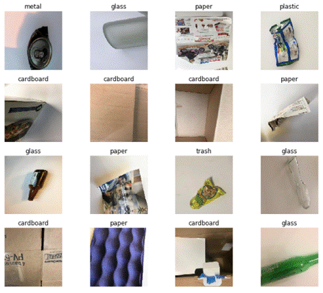

The US recycling industry is struggling and needs to be changed
The last century has seen a significant rise in population and consumption levels, which has led to an increase in waste production. Fortunately, global awareness of environmental impact has been increasing in the last decade. However, this increased consciousness hasn't yet translated into positive impact in the US. A clear example of this is the fact that effective recycling rates have remained stagnant. According to the Environmental Protection Agency (EPA), the difference in 2014 and 2015 effective recycling rates was less than one percent. Also, just 35% of the total waste production in the US was recycled or composted in 2015. The remaining waste often ends up in landfills and dumps, increasing the emission of toxic gases to the atmosphere.
The slowdown in recycling can be explained by the fact that recycling is an effortful and time-consuming task. Most people do not take the time to properly segment their trash into specific recycling bins. On top of that, even if people want to recycle, finding the appropriate bin can be confusing and lead to contaminated bins and ineffective recycling.
Moreover, in the past years, US recycling centers used to sort the recyclable trash, compact it and sell to China, where the real recycling happened. However, in 2018, China reduced its tolerance to contamination to 0.5%, which is currently infeasible in the US. This only worsened the problem, as recycling facilities are shutting down all over the country.
Thus, the question comes naturally: can we improve our current recycling rates and reduce contamination using machine learning?
The solution must come from the beginning of the recycling chain
Applying machine learning to classify trash is not new and has already been implemented in some recycling facilities around the world. However, it only increases the efficiency of the current operation at those recycling centers. In other words, when the trash gets to those recycling facilities, it is already contaminated by improper recycling done before.
Then, the improvement is limited by the contamination rate upon arrival, which is not controlled by the operation inside facilities. That's why the solution to this problem must come from the beginning of the recycling chain: either in the choice of materials in the consumer goods industry or in the sorting process of individuals.
Figure 1 - Simplified Recycling Chain
The focus of this work will be in the latter option, as seen in Figure 1 above. Hence, we can reformulate our initial question: can we improve our current recycling rates and reduce contamination before the trash is collected by using machine learning in smart bins?
Machine Learning algorithms can be helpful for waste sorting
In order to validate the hypothesis that machine learning can be used to classify waste into the correct category, I'll compare the performance of different machine learning algorithms on this task using a dataset of waste images.
Getting the data
For this project, I'm using a dataset of 2,527 images from an existing Github repository found here.
The images are divided into 6 categories of waste: plastic (482), metal (410), glass (501), cardboard (403), trash (137), and paper (594). Apart from trash, this dataset is reasonably balanced. A sample of this dataset can be seen in Figure 2 below.

Figure 2 - Sample of images from dataset
In computer vision, a common technique to use in order to expand the number of training examples and thus reduce variance is Data Augmentation. Here I performed Data Augmentation with transformations such as width and height shift range, flipping and zooming. In order to increase computational speed, I also resized the images from 512x384 to 200x200 pixels.
Training the models
With the dataset ready to be used, I'll now train a couple of models: CART, Random Forest, Gradient Boosting, XGBoost, Neural Network (NN), Convolutional Neural Network (CNN) and CNN with transfer learning.
Before training the models, I'll split the data into 50% training, 25% validation and 25% test.
CART
The first model I explored was a simple classification tree. With default parameters including the Gini impurity function, no minimum impurity decrease and a lower limit for the number of observations in each bucket of 2, the model yielded an accuracy of 45.11%.
Then, I performed 3-fold cross-validation on the hyper parameters and obtained an accuracy of 46.24% with no minimum impurity decrease and a lower limit for the number of observations of 6.
Random Forest
The second model implemented was a Random Forest, which with default parameters of 10 CART trees built, sqrt(features) variables examined at each split, and one minimum number of observations in each terminal node obtained an accuracy of 60.87%.
I then performed a 3-fold cross-validation procedure to obtain technical parameters of 1,100 CART trees built, 200 features examined at each split and 5 minimum number of observations in each terminal node, obtaining an increased accuracy of 68.90%.
Boosting
The next models analyzed were two types of ensemble boosting models that rely on slow learning rather than building parallel complete tree models. The gradient boosting model achieved an accuracy of 66.79% while the extreme gradient boosting obtained an accuracy of 66.27%.
Although XGBoost utilizes second order gradients and regularization to improve computation time, the multiple hour runtimes of the default models made me not use cross-validation.
Neural Network
I started by building a simple Neural Network using Keras. By tuning the number of epochs and dense layers I was not able to obtain an accuracy better than 47.43%. This was accomplished using a batch size of 32, 250 epochs and 4 dense layers with Relu and Softmax as activation functions.
CNN
I moved then to a CNN model that historically has better performances in classifying images. By changing the number of epochs and exploring different structures of the network, I obtained the best performances after 80 epochs, for a CNN with a batch size of 32, 3 2D convolution layers, 3 pooling layers, and 3 dense layers. I used Relu as the activation function for each layer, apart from the last one where I used the Softmax function. The obtained accuracy was 71.54%, which is higher than the ones obtained with any other previous model.
CNN with Transfer Learning
Lastly, I implemented a CNN with Transfer Learning using Keras. For this model, I used Resnet34, a famous deep residual network pre-trained on ImageNet, a dataset with 14 million images and 22 thousand different classes.
This pre-trained model can be very good with low level features related to images, but not necessarily with specific images of waste. Therefore, I added a final layer and trained it to make the model perform well on waste classification. With a batch size of 16, 20 epochs and a tuned learning rate, I obtained an accuracy of 91.29%, which makes this final model outperform any previous one.
Results
For the peculiarity of this problem I decided to use accuracy as the performance metric. In fact, we are equally interested in maximizing correct predictions and minimizing wrong predictions for each different type of waste, so accuracy is the most suited metric to accomplish that. Below we can see a comparison of the different models on accuracy:
|
Model |
Accuracy |
95% Confidence Interval |
|
CART |
46.24% |
(42.7%,50%) |
|
Neural Network |
47.43% |
(43.4%,51.1%) |
|
XGBoost |
66.27% |
(63.0%,69.8%) |
|
Gradient Boosting |
66.79% |
(62.6%,70.4%) |
|
Random Forest |
68.90% |
(65.3%,72.6%) |
|
CNN |
71.54% |
(68.0%,74.9%) |
|
CNN with transfer learning |
91.29% |
(89.3%,93.4%) |
It turns out that CNN with transfer learning had a huge advantage. This is reasonable, as we are using a network that was pre-trained with millions of images, which makes it detect good low level features without the need of a large dataset. The other models, however, will inevitably suffer from high variance due to the limited number of training examples.
In Figure 3 below we can see the confusion matrix for this model:
Figure 3 - Confusion Matrix for CNN with Transfer Learning
The y-axis corresponds to the true values, while the x-axis to the predicted values. By analyzing the confusion matrix, we can see that the model performs better with paper items, while it needs improvement in predicting the trash category. It makes sense, as the trash category is too broad and encompasses everything that is not contained in the other categories.
In order to understand where the model failed, I got a sample of images with the highest loss of prediction, seen in Figure 4 below:
Figure 4 - Error Analysis Sample
We can clearly spot some corner cases here. For example, items shining with light were predicted as metal (bottom right corner), because the model probably interprets luminosity in pixels as a strong predictor for metal. Another example is the second image of the first row. The fact that it was a white object made the algorithm predict it as paper, while it was plastic.
Although there is room for improvement in those corner cases, an accuracy of 91.3% in the test set seems really promising, given that recycling rates in the US are around 35%. Therefore, it validates the efficacy of computer vision algorithms for waste classification.
A demo of this algorithm can be tested in this web application I developed: robin-project.herokuapp.com
Smart bins are the final piece of the puzzle
Now that we've seen the power of computer vision to classify trash into the correct category, we need a way to apply this in the beginning of the waste chain. In order to do that, a hardware product needs to be made with a camera to collect images.
The first question that arises is: how do we sort the trash after the algorithm classifies the object?
One way to do it would be to implement a robotic system that automatically disposes the trash in the correct bin. From the point of view of the end user, this would be the best experience. One just throws the trash in the smart bin and don't have to think about it anymore. However, this will put all the risk of error in the algorithm, as whatever it predicts will be considered as true.
Because some people do know where to dispose their trash, this alternative would give no flexibility for them to sort by themselves and reduce the overall contamination rate. Furthermore, this solution is very expensive, as it requires a lot of energy to power the system, as well as a high cost of materials and manufacturing.
Having said that, a better alternative is to only indicate to the user where to dispose the trash. Hence, we do not impose anything, but we educate people. This could be done through LED light indicators, for example. A schema of the information flow can be found in Figure 5 below:
Figure 5 - Schema of information flow of solution
As we can see, the user experience starts by approximating the object to a scanner, which will then take a picture. This picture is preprocessed, compressed and sent to a cloud service via an API. This cloud service, which will be hosting the computer vision algorithm, will take the image as input, run the model and output the predicted category of the trash. This category is then encoded and sent back to the smart bin processor, which will turn on the respective LED light for that category. Finally, based on this LED indicator, the user will make an informed decision of where to dispose the trash.
In order for that system to work, all this flow must be done, ideally, in less than one second, as the final user usually don't want to spend too much time waiting to see where to throw their trash.
I developed a prototype of that system with a Raspberry Pi for a proof of concept. All I needed was:
- Breadboard
- 3 LED lights
- Wires
- 1 resistor
- RaspberryPi with built-in Wi-Fi connection
- Camera
With that in hand, I built a circuit with the LED lights, wires and resistors in the breadboard and connected to the Raspberry Pi through the GPIO header.
Then, I wrote a code in python to activate the scanner, preprocess the image, send to the cloud, get the response and turn on the LED light accordingly. The final result is shown in this quick demo:
Here, the red color means Metal/Glass, the yellow means Paper/Cardboard and the green means Plastic/Trash.
Final Remarks
In this article, I compared a couple of machine learning algorithms on the task of waste image classification and integrated the best model with a hardware component to create a smart bin concept.
According to the results, using computer vision to help reducing the contamination rate in recycling seems very promising and, in order to work, it must be applied in the beginning of the chain.
However, in order to scale the solution, some additional steps must be followed. Although the final model performed very well on the test set, I don't know how it will perform in real life. Then, it would be useful to test the model with real-world images that we collect with a camera installed in the bin, for example. I should also decide if I focus on one object at a time or if I perform multiple object detection in case someone throws more than one type of waste at the same time.
Regarding the classes, if we are to apply the model in real-life, we need to adapt them to the local law. For example, in California our classes would be Landfill, Compost, Cans & Bottles and Mixed Paper.
Finally, we can replace accuracy by average loss as our evaluation metric. For that, we need to estimate the loss of incorrectly classifying our classes, which can be linked to the potential revenue that could be made by correctly sorting the waste.